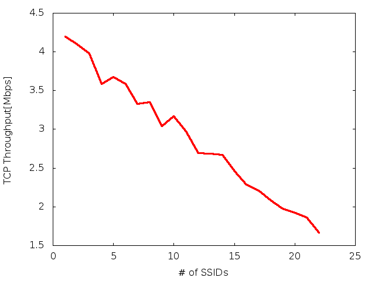

Colocviu
- trebuie să luați minimum 50% la colocviu pentru a promova cursul
- colocviul valorează 30% din nota finală
- colocviul durează 45 minute, cu semigrupa
- aveți acces la toate laboratoarele și scripturile folosite în timpul semestrului
- primiți un script, sau vi se cere să implementați un script nou pe baza celor existente
- submiteți rezultatele pe hârtie, sau electronic
- indicați modificările, și modul de rulare
- interpretarea rezultatelor (aici sunt majoritatea punctelor)
Exemplu
Mulți producători oferă posibilitatea de a avea mai multe SSID-uri pe un AP cu un singur card fizic, operând desigur pe același canal. Se vor transmite beacon-uri și se vor accepta autentificări/asocieri pe amblele SSID ca și cum ar fi separate, deși fizic este un singur card. Se consideră situația în care operăm doar în 802.11b
- beaconul de 802.11b(și g/n) se transmite la 1Mbps, și este de minim 150 octeți
- beaconul folosește broadcast (fără SIFS+ACK), dar folosiți un script de unicast pentru aproximare
Se cere:
- (10%) care este durata unui beacon?
- (5%) câte beacon-uri pe secundă s-ar putea transmite fără contenție?
- (5%) ce debit în bps folosește un SSID?
- (10%) ce debit de TCP aș putea obține de la AP-ul meu 11b, 11Mbps în absența oricăror beacon-uri?
- (10%) eu și vecinul operăm pe același canal, și fiecare avem câte 3 SSID-uri (intern, prieteni, DMZ). Se mai văd încă alte 4 SSID-uri unice în bloc, toate foarte aproape și pe același canal. Ce throughput de TCP pot spera să obțin în condiții optime: dacă sunt aproape de AP-ul meu, nu mai e nici un alt client în aer?
- (40%) plot manual(cu pixul), sau gnuplot TCP Throughput(nr. SSID=1..20)
- (20%) interpretare. Care este relația matematică între capacitatea disponibilă și numărul de rețele create? Puteți folosi funcția
fitdin gnuplot, sau fit manual.
Rezolvare
- se folosește scriptul infra.tcl din lab 2, 3 în care se modifică 11b, dataRate 1Mbps
ns ./infra.tcl -run_tcp 0 -nn 2 -packetSize 150 -sendingRate 1Mbps
- rezultă 4000 packete în 10s, adică 2.5ms/beacon
- 400pps
- 150*8biți*10beacons/sec = 0.012Mbps
ns ./infra.tcl -run_tcp 0 -nn 2 -packetSize 150 -sendingRate 0.012Mbps
răspunde 10pps, se poate verifica scalarea cu număr mai mare de emițători
- cu 11b/11Mbps
ns ./infra.tcl -run_tcp 1 -nn 2 -packetSize 1460
obținem 4.15Mbps.
- un SSID emite 10 beacons/second, deci 25ms/second, adică 2.5% din capacitate. În cazul ideal, pierd liniar cu numărul de SSID vizibile, câte 2.5%. Pentru 3 eu, 3 vecinul, 4 altele = 10 ⇒ 25% pierderi, deci 3.1Mbps în cel mai bun caz.
- se modifică infra.tcl pentru a crea această topologie. Vezi deasemenea multirate.tcl (lab 11) pentru a seta noduri cu MCS diferit
- (idee: 10%)
- nodurile 3..(nn-1) → 2 emulăm beacon-uri la 1Mbps, UDP de 150bytes, 10pps (0.012Mbps)
- nodurile 1 → 0 la 11Mbps, TCP cu 1460
- (descriere modificări: 10%)
> # setarea MCS diferențiat pentru noduri: > if { $i <= 1} { > Mac/802_11 set dataRate_ 11Mb ;# nodurile 0 și 1 > } else { > Mac/802_11 set dataRate_ 1Mb ;# nodurile 2..(nn-1) > } > $ns_ node-config -macType $val(mac) ... > # planificarea a 1 flux TCP 0->1, nn-2 fluxuri UDP/150/10pps=12Kbps > > for {set i 3} {$i < [ expr $val(nn) - 1]} {incr i} { > attach-cbr-traffic $i 2 150 0.012Mbps $val(start0) $val(stop0) $i ;# emulare beaconuri > puts "attached $i->2" 313a314 > attach-tcp-traffic 1 0 1460 $val(start0) $val(stop0) 1001 ;TCP - (cum rulez: 10%)Se rulează
x=4; while [ $x -le 23 ]; do echo -n "$(($x-3)) "; ns ./infra1.tcl -nn $x | grep 'Throughput 1001'; x=$(($x+1)); done | tee b
- x=4 înseamnă 0→1 TCP, 3→2 beaconuri, rezultă 4.15Mbps
- (grafic cu pixul: 10% )
gnuplot> plot 'b' using 1:4 w l
 … aproape dreaptă. La 10 SSID-uri rezultă cam 3Mbps, aproape de cât estimează și analiza.
- fit manual: se observă dependența lineară și se confirmă analiza de la p2. În gnuplot
> f(x) = a*x + b > fit f(x) 'b' using 1:4 via a,b > plot f(x) t 'fit', 'b' using 1:4 t 'data'
Ce valori rezultă pentru a și b?